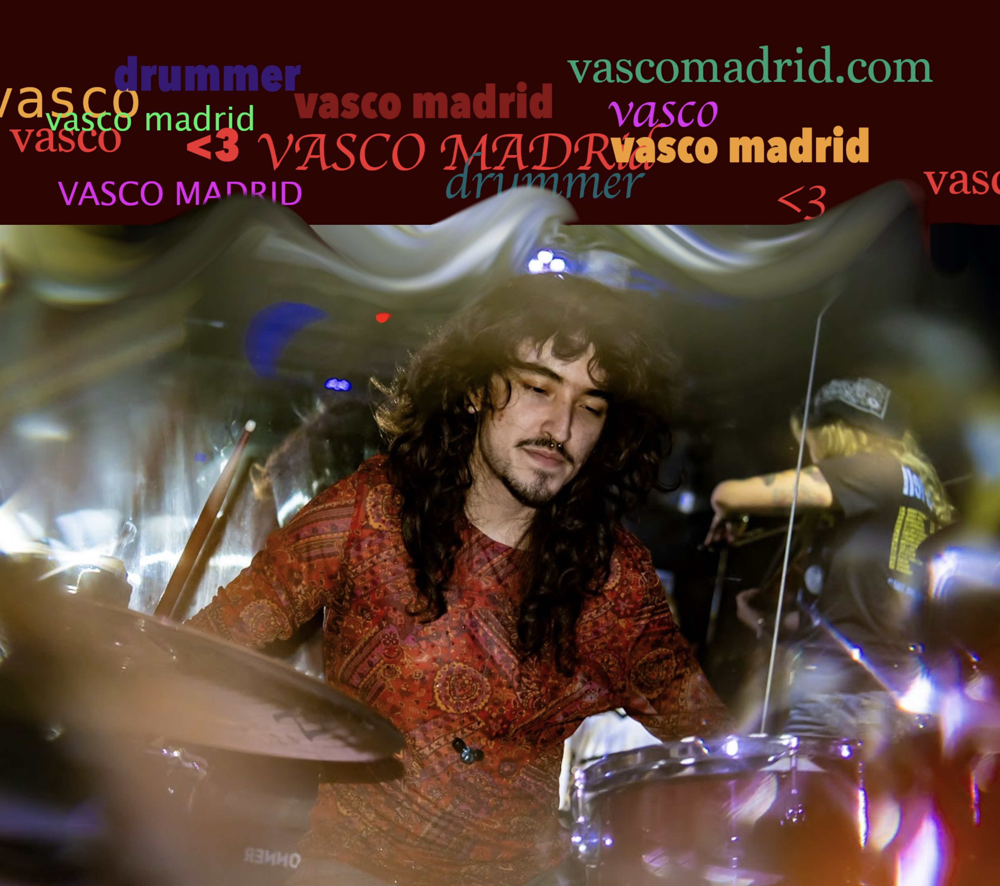
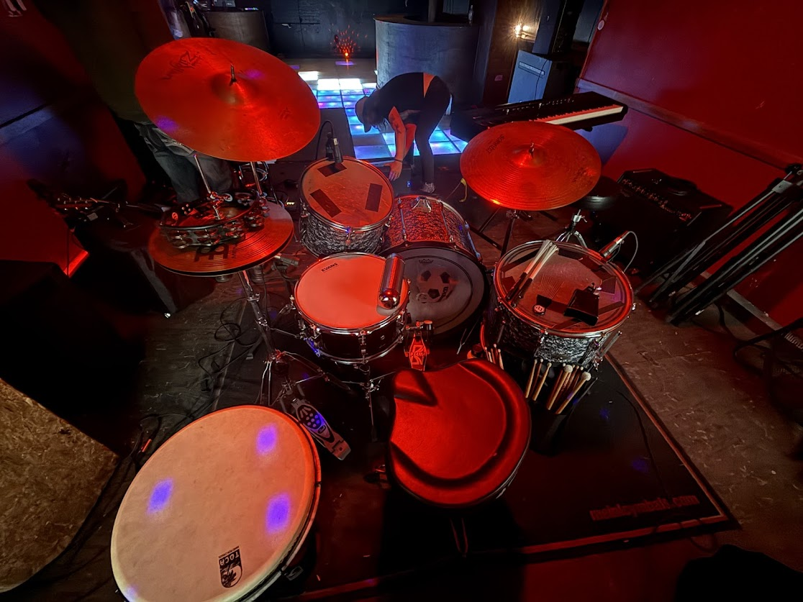
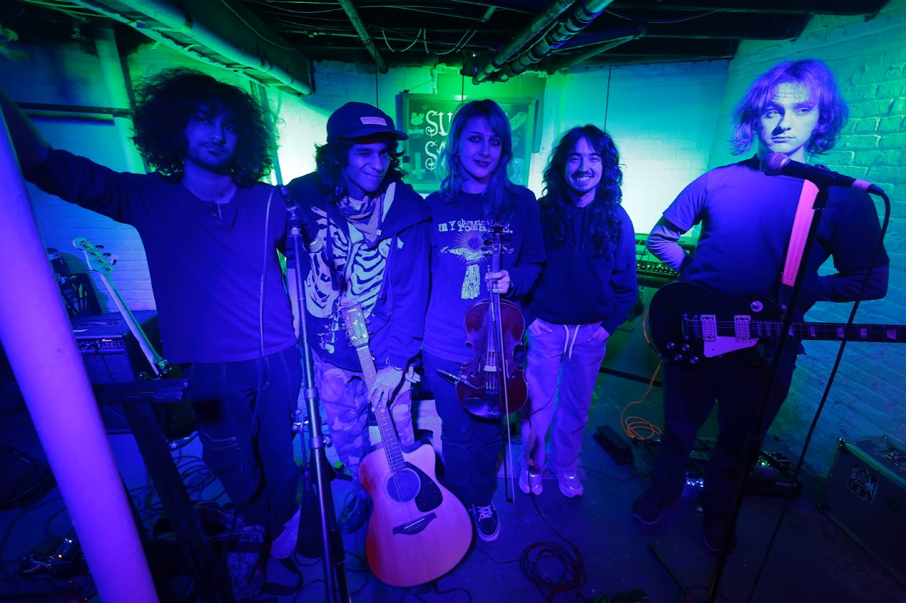
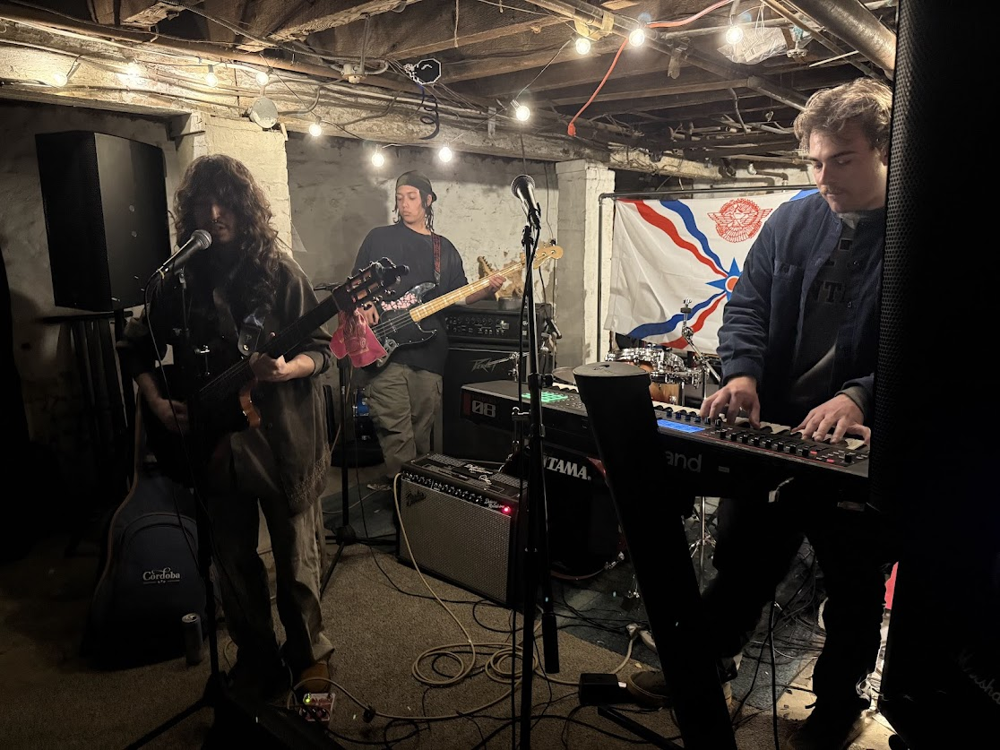
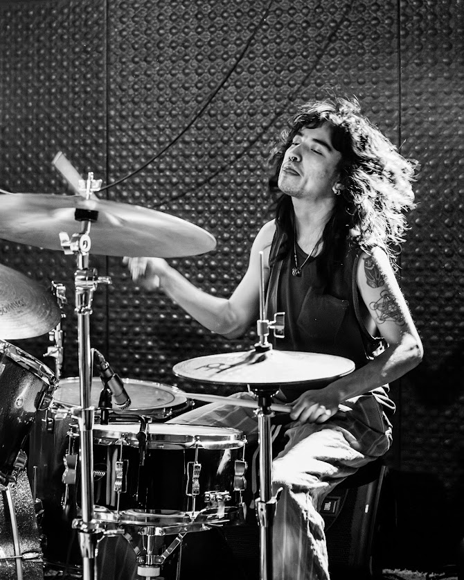
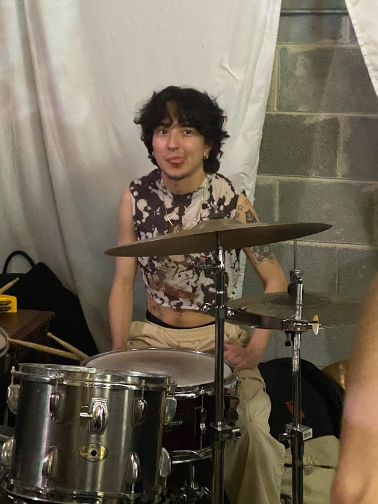
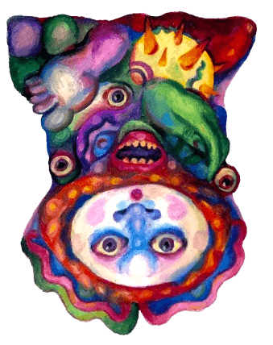
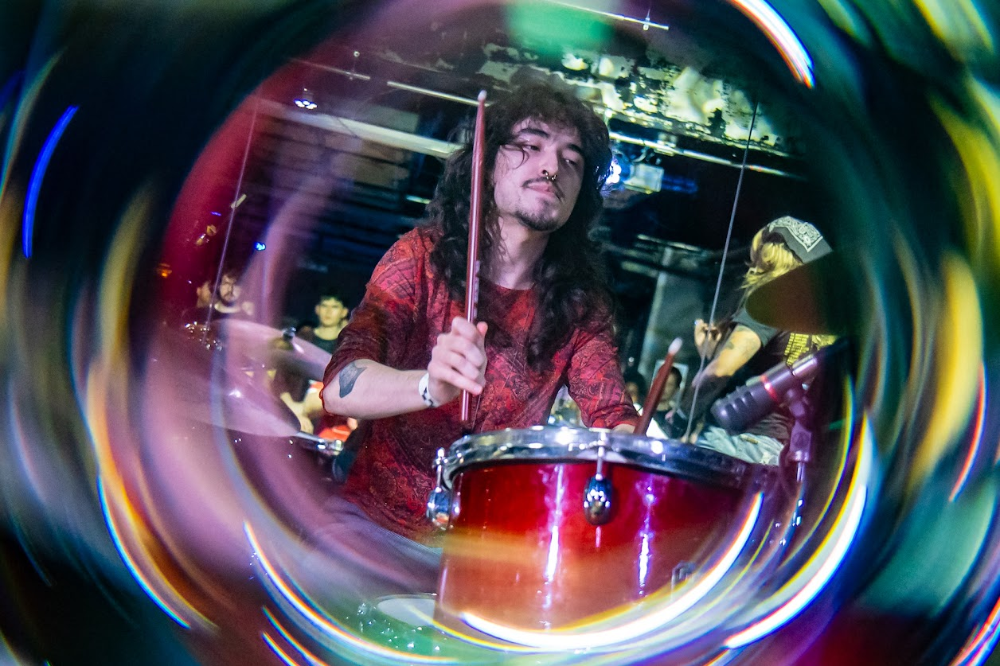

Philadelphia-based musician specializing in rock and latin drumming.
Available for recording sessions, live gigs, and drumming lessons.
Hello! Welcome to my self-made portfolio website. I’m a 26 year old multi-instrumentalist and artist with a focus on percussion performance. I'm currently located in Philadelphia, Pennsylvania by way of South Carolina and South America.
With over 12 years of live drumming experience, I currently play in several projects and am open to new opportunities to create music. I’m known for being reliable, passionate, and committed. so hit me up!
Scroll down to learn more about my current and previous projects, and if you want to work together, feel free to email me at vasco.a.madrid@gmail.com or connect via my socials.

*drum setup for sodaseas set at fotoclub in 2025
ᕕ(︶‿︶)ᕗ
Current Projects


ᕕ(⌐■_■)ᕗ ♪♬

playing with sodaseas in 2025
( ಠ‿<)
Previous Projects


